Design system · Self directed
One system. Three brands. No component knows which.
Three brands and two colour modes out of a single component set. This page runs on ERA's own tokens, so the swatches above re-theme it.
The claim
One Button component. Three brands.
Nothing in the markup changes between these. The accent, the typeface and the corner radius all come from tokens.
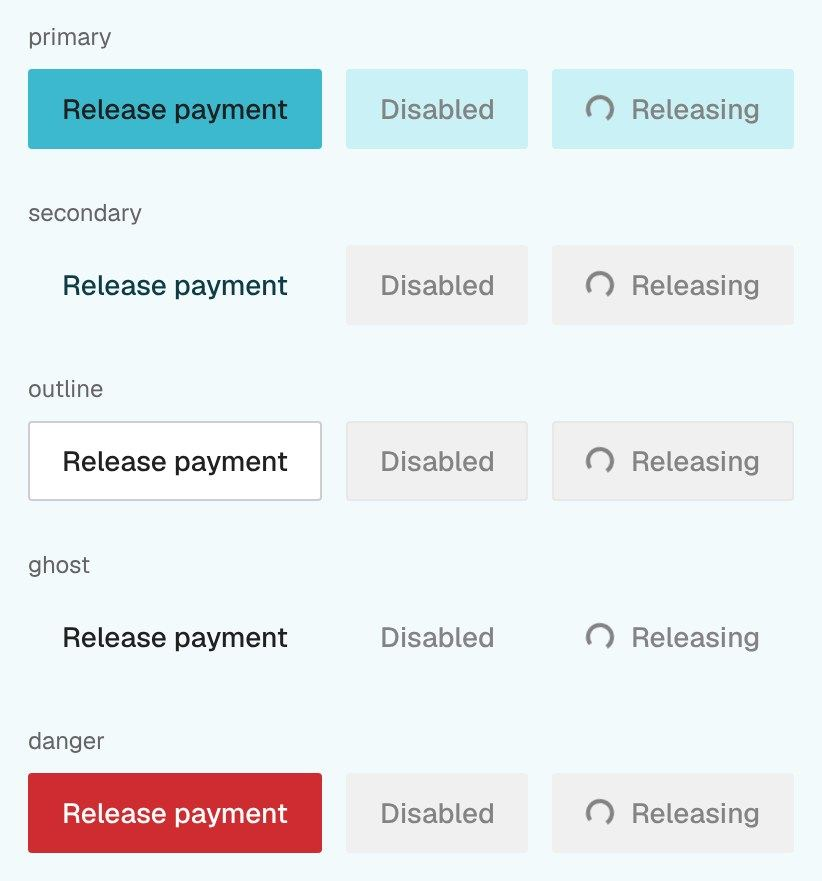
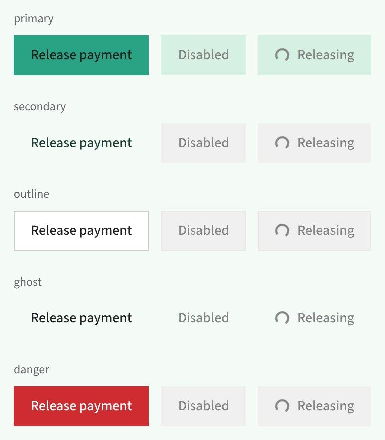
Captured from Storybook at the same viewport, switching only the brand global.
The problem
Four ways a shared library breaks
The fork
Someone copies Button into Button2 instead of finding the value that should have been a token.
The flag
The component starts carrying if (brand === 'b2'), so every new brand means editing every component.
The quiet accessibility hole
One accent passes contrast, the next one does not, and nobody checks. This is the one I hit.
The documentation lie
The docs show one brand. Anyone building for the other two is guessing.
Same root cause every time: the component is allowed to know something it should not.
The architecture
Three layers, one readable
Primitives hold raw values. Brand re-points them per brand. Semantics re-points brand per mode, and is the only layer a component may read.
--sem-primary-bg--brand-primary-roles-action--colors-iris-700- Typeface
- IBM Plex Sans
- Button radius
- 8px
- Label on fill
- White
Switch brand or mode above and every row moves. The button reading --sem-primary-bg never learns that Iris exists.
The rule that holds it up: no component contains a hex value, a pixel radius, or a raw spacing number. That is what makes a fourth brand a data change, not a code change.
Figma to code
A build that refuses to lie
Tokens are exported from Figma and built, never hand written. The build exits non-zero on any reference that does not resolve, so Figma and code cannot quietly drift apart.
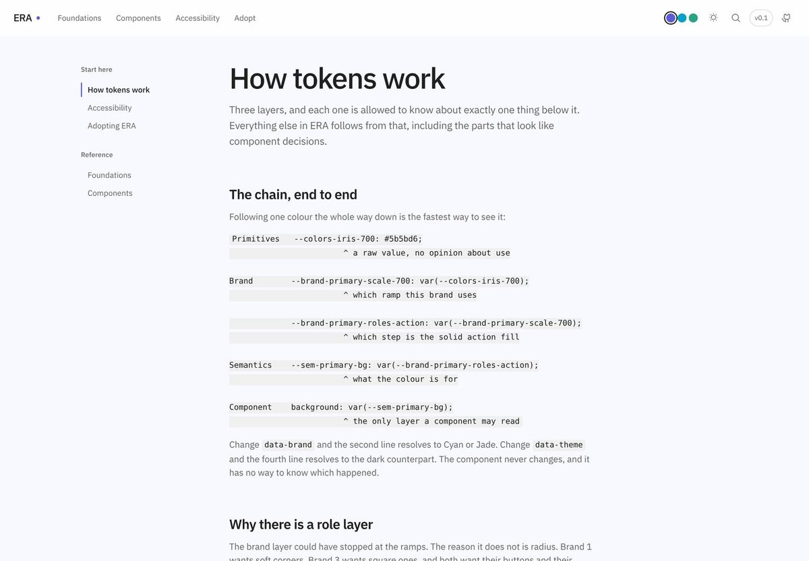
Accessibility
The audit failed 10 of 23 pairs
A live audit resolves the real computed colour of every foreground and background pair, per brand and per mode. Both causes were in the tokens, not in any component.
The neutral ramp was carrying text
Four ramp steps, rendered live on this page's surface. Only two can hold body text.
Ratios computed in the browser from the resolved token values, in whichever mode you are viewing.
Hierarchy in text comes from size and weight, not from a third grey.
One token assumed brands are interchangeable
The label on the solid fill was a single global white. Each card below is a real nested brand scope, measured live.
The outlined row is the one that passes. Both candidates are real tokens, white and --colors-grey-950, measured against each brand's own fill. There is no single answer across the three, which is the finding. The fix was a brand role token so each brand answers for its own fill.
The one exemption
A disabled control's label sits below 4.5:1 on purpose. WCAG 1.4.3 exempts inactive controls, and a disabled button at full contrast stops reading as disabled. It moved from 1.68:1 to 3.33:1: legible, without pretending to be active.
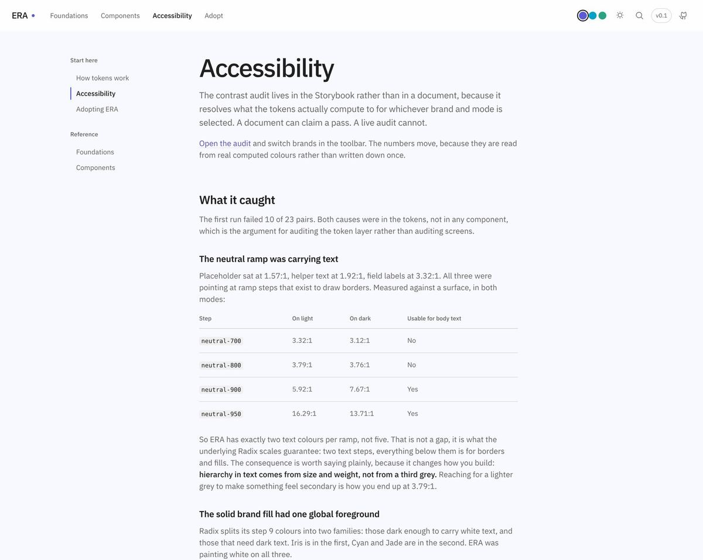
What went wrong
Three bugs worth writing down
Three faces, actually loaded. For weeks they were not, and nothing looked broken.
Three typefaces that were never loaded
The tokens were right. The brands were switching. Every one of them rendered in the system font stack, because no web font was ever loaded.
I fixed it in Storybook. Building this page, I checked the docs site the same way and found the identical bug still live there: zero font files shipped, no @font-face rules. Every screenshot here was retaken after fixing it.
Custom properties resolve where they are declared
The semantic layer was declared on <html>, so a nested brand scope resolved against the root brand and showed the wrong accent. A custom property is substituted where it is declared, not where it is used. The three fill cards above are that fix working.
The menu that sized to the wrong thing
Menu and Select share a popup surface. A Select's options should match its trigger, because that is the control's shape. A Menu's items should size to their content, because they are commands. One surface, two rules.
What shipped
23 components, weighted to the hard parts
A field with seven states, a menu implementing the full WAI-ARIA menu button pattern, a Select built as a listbox. Modal is a real <dialog>, Accordion is <details>, so in-page find still works.
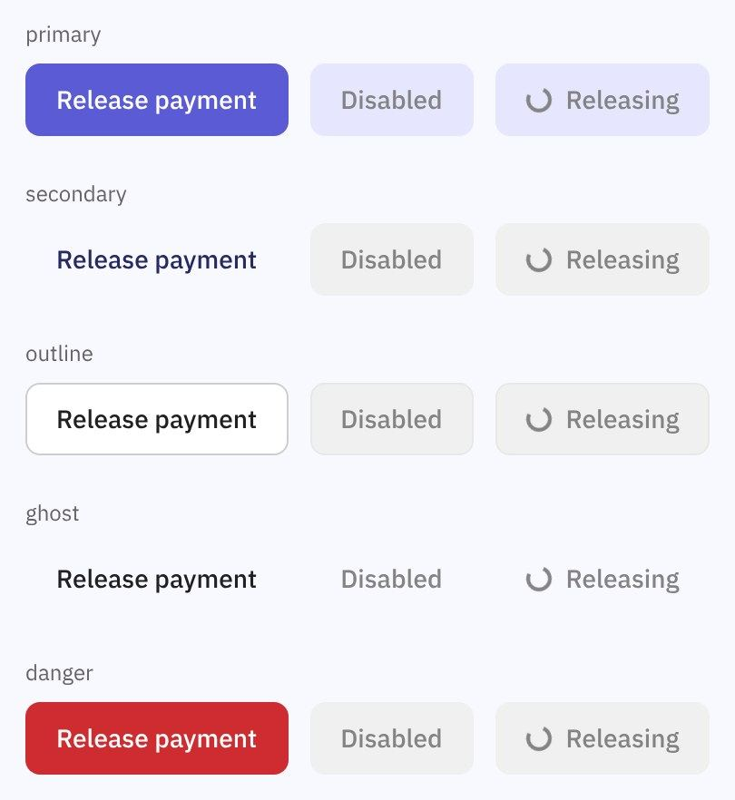
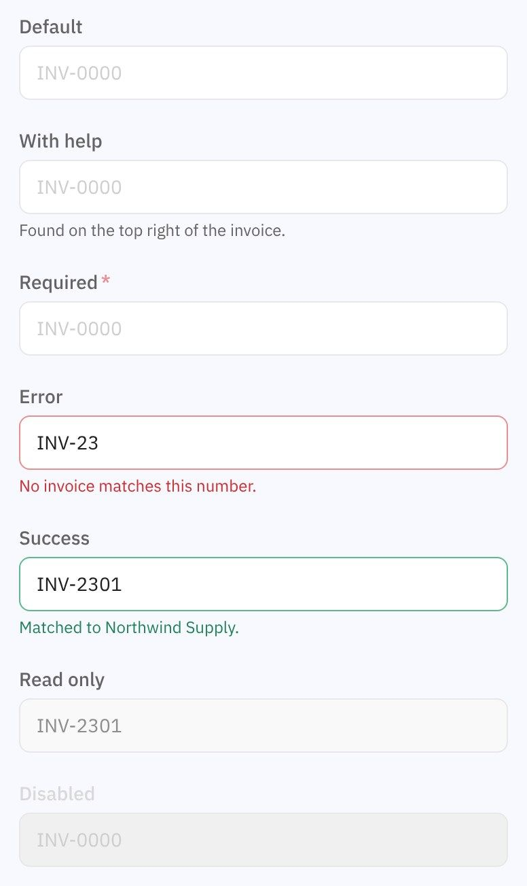
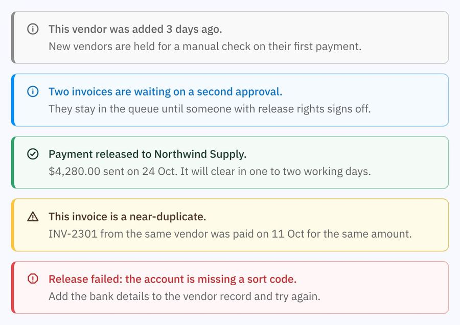
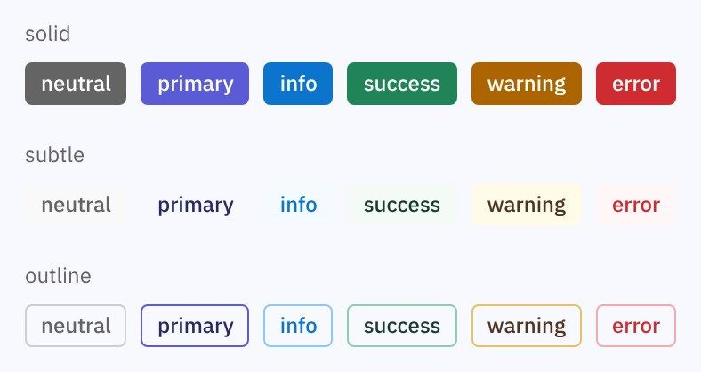
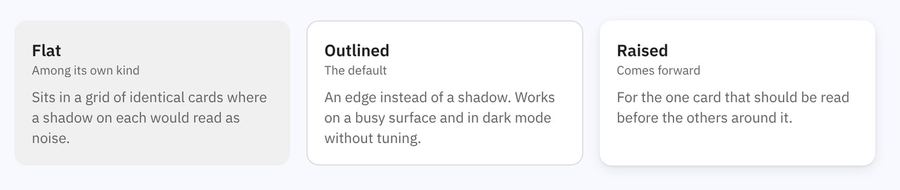
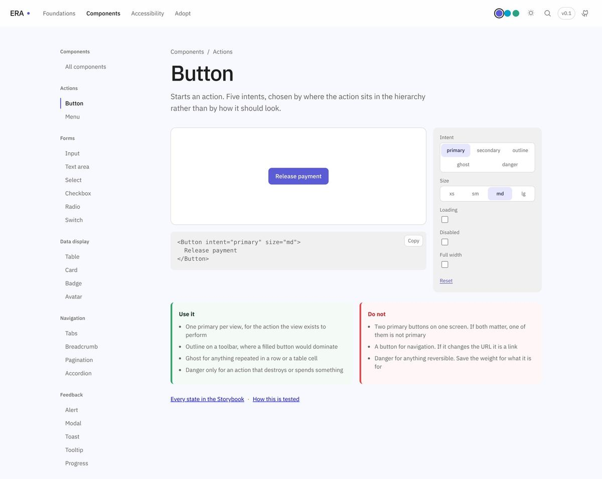
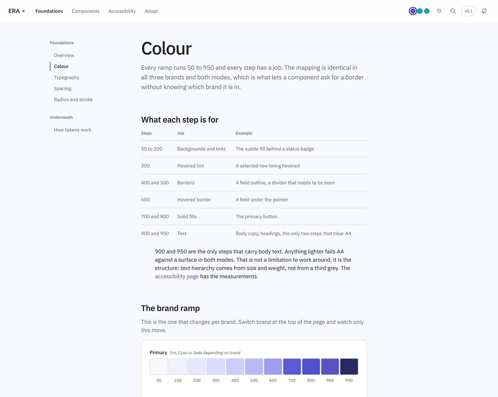
Storybook is for the person building the component. The docs are for the person deciding whether to use it.
Reflection
What I would do differently
Audit contrast before building components
The audit was the highest value thing I built, and I built it last. At the token stage it would have caught the global white on day one.
Verify what renders, not what is configured
The typeface bug existed because I checked the tokens instead of checking what the browser drew.
Decide the token set deliberately
Around 40 unused brand role tokens are a bet on future need. Unused tokens teach people that tokens are optional.
Still open
- A changelog, so consumers do not have to diff it themselves.
- Search covers page titles only, not prose.
- Visual regression tests. A token change that breaks Brand 2 dark is currently only caught by someone looking.